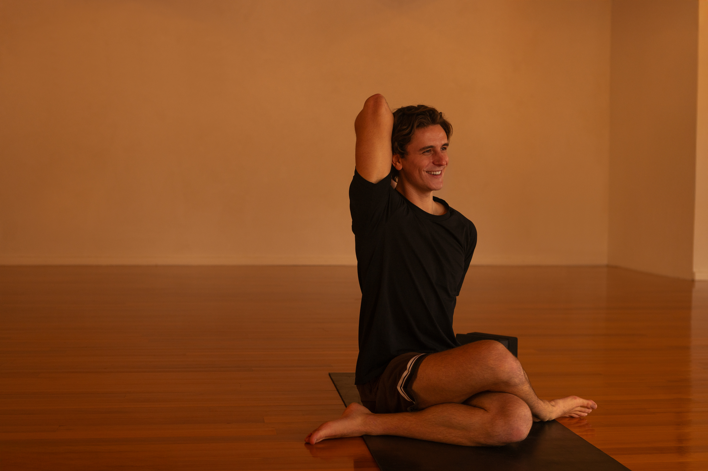
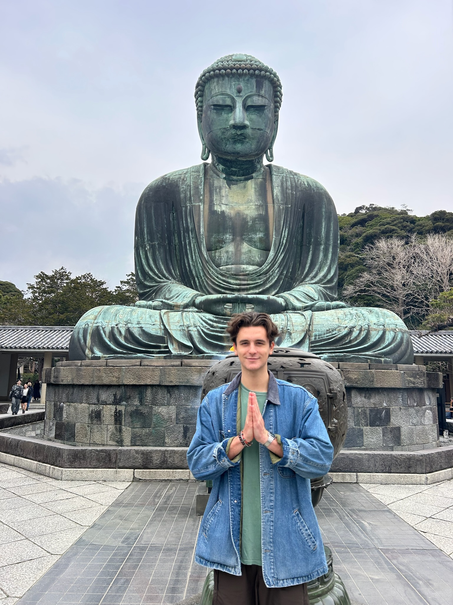
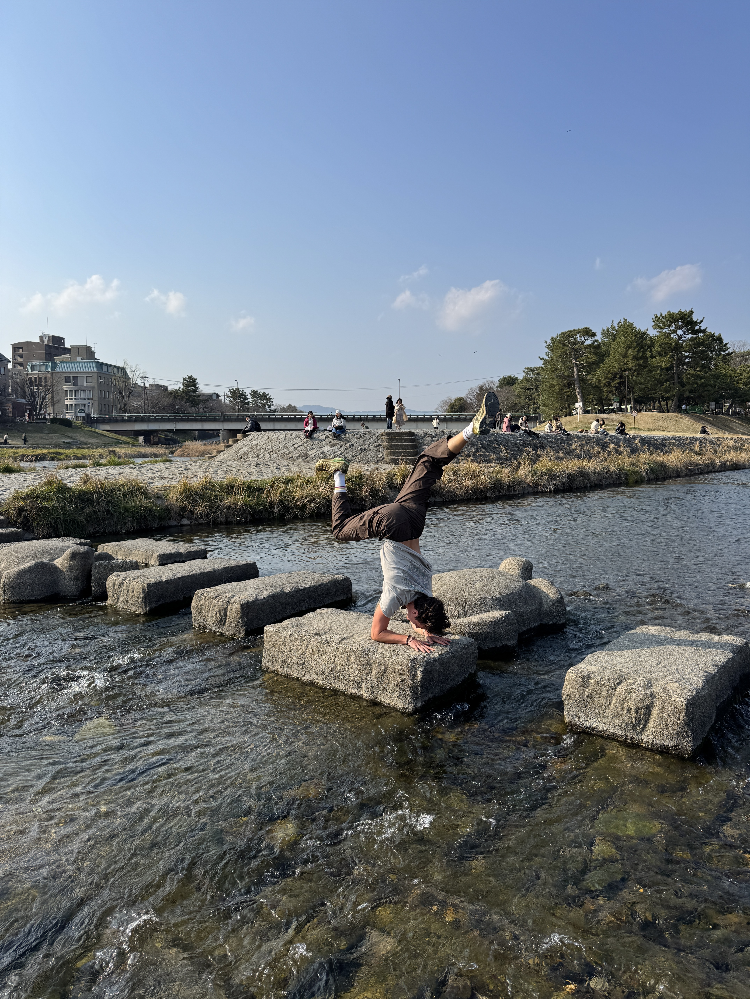
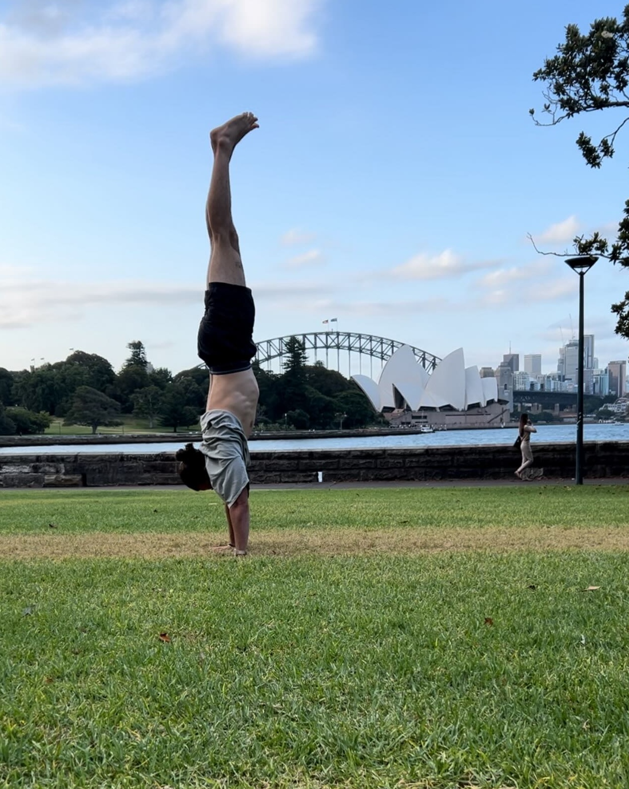

I'm Blake, a yoga teacher in New York with over 500 hours of training. My desire to fully commit myself to teaching and practicing yoga reached its inflection point in August of 2024 when I quit my job in consulting and bought a one way ticket to follow this deeper calling. My journey took me around the globe to Hawaii, Australia, New Zealand, India - and nearly two years later, back home to New York. In this time, I had the honor of not only teaching full time but also learning from incredible teachers throughout the world.
I first came to yoga while in college, building a consistent home practice during the 2020 COVID-19 pandemic. Discovering yoga during global lockdowns meant I had never even been to a yoga studio when I decided to do a teacher training in Bali with Yoga East + West in 2022. I was drawn to the movement, philosophy, and mindfulness of yoga more than the idea of being a "yoga teacher." However, as I learned more, I couldn't help but become excited about sharing this transformational practice with others.
After teaching full time in New Zealand for nearly a year, I completed the Jivamukti Yoga 300-hour training to deepen both my own practice and my skillset as a teacher. The Jivamukti method has deeply influenced how I approach sequencing, philosophy, and the integration of yoga on and off the mat. My teaching is also greatly shaped by my experiences with vipassana meditation, zen buddhism, and the many great teachers I've been lucky enough to work with at St. Mark's Yoga
I truly believe yoga is for everybody — that the practice has a magical way of meeting you where you're at. Whether you are new to yoga or have been practicing for years, I hope to create a space where you can find moments of self-reflection, physical challenge, and playfulness.
I feel grateful that I get to share my experience of yoga with others and hope to practice with you soon!